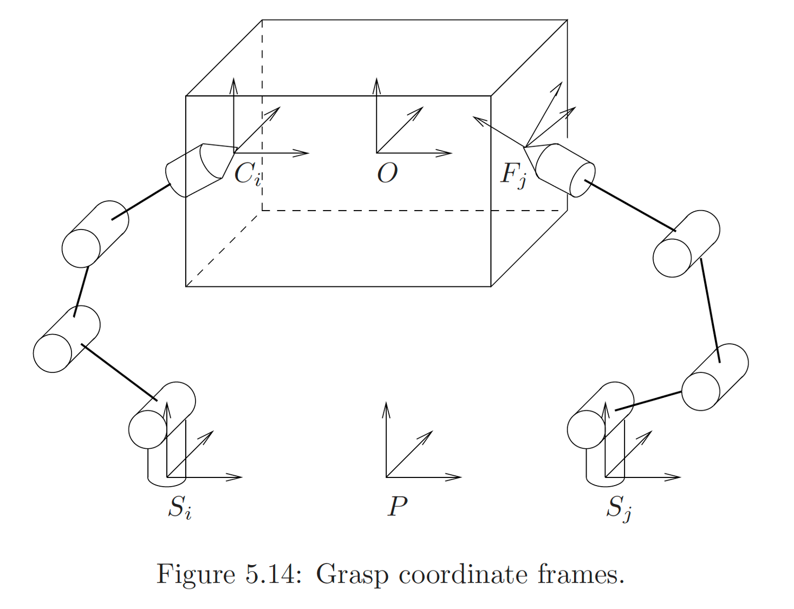

L8: Basic Concepts of Rigid-Body Dynamics
Hao Su
Spring, 2021
Some Further Clarifications on Velocity
- Consider we observe the motion of a moving body $b(t)$ from a moving observer's frame $o(t)$, and the recording of motion is relative to $s(t)$.
- velocity observed from an arbitrary frame (e.g., point linear velocity, angular velocity, and twist) is: \[ \mv{v}^{o(t_0)}_{s(t_0)\to b(t_0)}=\left.\frac{\d{}}{\d{t}}p^{o(t_0)}_{\color{red}{s(t) \to b(t)}}\right\vert_{t=t_0}, \qquad \mbox{where}\ p^{o(t_0)}_{s(t) \to b(t)}=p^{o(t_0)}_{o(t_0)\to b(t)}-p^{o(t_0)}_{o(t_0) \to s(t)} \]
- Note: above is a general rule of taking derivative of coordinate w.r.t. time (so that body velocity/twist is non-zero).
- e.g., when we derive the body-frame Euler equation last lecture, body inertia is defined by body frame coordinates, more precisely, \( I^{b(t_0)}_{b(t)}=\int \d{V}\rho(r^{b(t_0)}_{b(t)\to x(t)})[r^{b(t_0)}_{b(t)\to x(t)}][r^{b(t_0)}_{b(t)\to x(t)}] \)
- Therefore, while $I$ is an invariant w.r.t. $t$ (since $\left.r^{b(t_0)}_{b(t)\to x(t)}\right\vert_{t=t_0}$ is invariant), its derivative (taken only w.r.t. the subscript) is non-zero.
- This is exactly the case that body-frame coordinate is a constant for body points, but they have velocity.
Agenda
click to jump to the section.Kinetic Energy
Kinetic Energy for Point Mass
- If a point mass \(m\) is moving with velocity \(\mv{v}^o_{s(t)\to b(t)}\) (\(s(t)\) is an inertia frame and the origin of \(b(t)\) is the point), then the kinetic energy of the point mass is \[ T_{s(t)\to b(t)}=\frac{1}{2}m\|\mv{v}^o_{s(t)\to b(t)}\|^2 \tag{kinetic energy} \]
Observer-Independence of Kinetic Energy
- Note that we omit observer's frame when describing kinetic energy, because it is independent of the observer's frame.
- We prove by showing that \(\|\mv{v}^{o_1}_{s(t)\to b(t)}\|=\|\mv{v}^{o_2}_{s(t)\to b(t)}\|\)
- \(\mbox{Proof:}\\ \begin{aligned} \mv{v}^{o_1}_{s(t)\to b(t)}&=\mv{v}^{o_1}_{b(t)}-\mv{v}^{o_1}_{s(t)}=[\mv{\xi}^{o_1}_{b(t)}-\mv{\xi}^{o_1}_{s(t)}]p^{o_1} =T^{-1}_{o_2\to o_1}[\mv{\xi}^{o_2}_{b(t)}-\mv{\xi}^{o_2}_{s(t)}]T_{o_2\to o_1}p^{o_1}\\ &=T^{-1}_{o_2\to o_1}[\mv{\xi}^{o_2}_{b(t)}-\mv{\xi}^{o_2}_{s(t)}]p^{o_2} =T^{-1}_{o_2\to o_1}(\mv{v}^{o_2}_{b(t)}-\mv{v}^{o_2}_{s(t)}) =T^{-1}_{o_2\to o_1}\mv{v}^{o_2}_{s(t)\to b(t)}\\ &= \begin{bmatrix} R^T_{o_2\to o_1} & -R^T_{o_2\to o_1}t_{o_2\to o_1}\\ 0 & 1 \end{bmatrix} \begin{bmatrix} \mv{v}^{o_2}_{s(t)\to b(t)}\vert_{3\times 1}\\ 0 \end{bmatrix} = \begin{bmatrix} R_{o_1\to o_2}\mv{v}^{o_2}_{s(t)\to b(t)}\vert_{3\times 1} \\ 0 \end{bmatrix} \end{aligned}\\ \therefore \|\mv{v}^{o_1}_{s(t)\to b(t)}\|=\|\mv{v}^{o_2}_{s(t)\to b(t)}\| \)
-
We have also derived \( \mv{v}^{o_1}_{s(t)\to b(t)}= R_{o_1\to o_2}\mv{v}^{o_2}_{s(t)\to b(t)} \mbox{ for }\mv{v}\in\bb{R}^3 \tag{change of frame for velocities} \)
Kinetic Energy for Rigid Body
- Integrate kinetic energy of every point mass over the body
- We choose the body frame \(\cal{F}_{b(t)}\) to start the derivation. Using the independence of observer's frame, we derive the formula to compute the energy in other frames.
- The origin of our body frame is always at the center of mass of the body
- The velocity of a body point \(\mv{r}^{b(t)}\) is \[ \begin{aligned} \mv{v}^{b(t)}_{s(t)\to b(t)}&=[\mv{\xi}^{b(t)}_{s(t)\to b(t)}]\mv{r}^{b(t)}\\ &= \begin{bmatrix} [\mv{\omega}^{b(t)}_{s(t)\to b(t)}] & \dot{\mv{t}}^{b(t)}_{s(t)\to b(t)} \\ 0 & 0 \end{bmatrix}\mv{r}^{b(t)} \end{aligned} \]
Kinetic Energy for Rigid Body
-
Therefore,
\[
\begin{aligned}
T_{s(t)\to b(t)}&=\int_{\mv{r}^b\in B}\frac{1}{2} \rho(x)\d{V} \|\mv{v}^{b(t)}_{s(t)\to b(t)}\|^2
% &=\int_{\mv{r}^b\in B}\frac{1}{2} \rho(x)\d{V}\left\|\begin{bmatrix}
% [\mv{\omega}^{b(t)}_{s(t)\to b(t)}] & \dot{\mv{t}}^{b(t)}_{s(t)\to b(t)} \\
% 0 & 0
% \end{bmatrix}\mv{r}^{b(t)} \right\|^2\\
=\int_{\mv{r}^b\in B}\frac{1}{2} \rho(x) \d{V}\|[\mv{\omega}^{b(t)}_{s(t)\to b(t)}]\mv{r}^{b(t)}+\dot{\mv{t}}^{b(t)}_{s(t)\to b(t)}\|^2 \\
&= \mbox{(some derivations using } [\mv{\omega}]\mv{r}=-[\mv{r}]\mv{\omega}\mbox{)} \\
&= \frac{1}{2}m\|\dot{\mv{t}}^{b(t)}_{s(t)\to b(t)}\|^2 + \frac{1}{2} (\mv{\omega}^{b(t)}_{s(t)\to b(t)})^T \mv{I}^{b}\mv{\omega}^{b(t)}_{s(t)\to b(t)}\\
&=\frac{1}{2} (\mv{\xi}^{b(t)}_{s(t)\to b(t)})^T \mv{\f{M}}^{b} \mv{\xi}^{b(t)}_{s(t)\to b(t)}
\end{aligned}
\]
where
\[
\mv{\f{M}}^b=\begin{bmatrix}
m \rm{Id}_{3\times 3} & 0\\
0 & \mv{I}^{b}
\end{bmatrix}\in\bb{R}^{6\times 6}
\]
Kinetic Energy for Rigid Body
- Consider two frames \(\cal{F}_{1}\) and \(\cal{F}_{2}\). Let \(T_{1\to 2}\) be the change of coordinate transformation.
- To ensure that energy must be independent of the observer's frame, we define \(\mv{\f{M}}^2\) so that \[ \frac{1}{2}(\mv{\xi}^1)^T \mv{\f{M}}^1 \mv{\xi}^1=\frac{1}{2}(\mv{\xi}^2)^T \mv{\f{M}}^2 \mv{\xi}^2 \]
- Recall that \( \mv{\xi}^1=[\rm{Ad}_{1\to 2}]\mv{\xi}^2 \), and we conclude that \[ \mv{\f{M}}^2=[\rm{Ad}_{1\to 2}]^T \mv{\f{M}}^1[\rm{Ad}_{1\to 2}] \tag{change of frame} \]
Change of Observer's Frame
for Rotational Inertia Matrix
- A side-product of introducing \(\mv{\f{M}}^o\) is that we can compute the inertia matrix in other frames conveniently
- We derived the change of frame formula for different body frames. What about frame change between general observer's frames?
- One can verify that, the bottom-right \(3\times 3\) block of \(\mv{\f{M}}^2\) is the rotational inertial matrix in \(\cal{F}_2\)
Change of Frame for Various Quantities
Motivating Example: Grasp Problem
- Consider the right grasp problem
- Assume that we are grasping this box using two arms
- We apply torques at each joint through the installed motors
- These torques will be passed to the tips of the fingers.
-
The contact area will create certain force and torque at the contact point
- force: pressure and friction
- torque: e.g., anti-twisting friction force caused by the area contact

Contact Coordinate Frame
- We build a contact frame \(C_i\) at each contact point
- The \(z\)-axis of the frame points inward along surface normal
- When recording force and torque at the contact point, it is natural to set \(C_i\) as the observer's frame, i.e., \[ \mv{F}^{C_i}=\begin{bmatrix}\mv{f}^{C_i}\\\mv{\tau}^{C_i}\end{bmatrix} \]

Some Kinds of Contact Forces
| Contact Type | Frictionless point contact | Point contact with friction | Soft-finger |
| \(\mv{F}^C\) | \(\begin{bmatrix} 0 \\ 0 \\ f_z \\ 0 \\ 0 \\ 0 \end{bmatrix}\) | \(\begin{bmatrix} f_x \\ f_y \\ f_z \\ 0 \\ 0 \\ 0 \end{bmatrix}\) | \(\begin{bmatrix} f_x \\ f_y \\ f_z \\ 0 \\ 0 \\ \tau_z \end{bmatrix}\) |
Adding Forces and Torques
- Suppose we have calculated \(\mv{F}^{C_i}\) at each contact (will learn later)
- What is the combined force and torque?
- We cannot directly add forces and torques recorded using different observer frames
- However, we can change all to the same frame (e.g., body frame) and add together!
Change of Observer's Frame for Force and Torque
Consider the question of changing the observer's frame for force and torque- We would relate
- \(\mv{f}^1\) and \(\mv{f}^2\)
- \(\mv{\tau}^1=\mv{r}^1\times \mv{f}^1\) and \(\mv{\tau}^2=\mv{r}^2\times \mv{f}^2 \)
- Note that \[ \begin{aligned} \mv{r}^2&=R_{2\to 1}\mv{r}^1+\mv{t}_{2\to 1}\\ \mv{f}^2&=R_{2\to 1}\mv{f}^1\\ \end{aligned} \]
- Plug in the definition, and we derive that \[ \begin{aligned} \begin{bmatrix} \mv{f}^2\\\mv{\tau}^2 \end{bmatrix} &=\begin{bmatrix} R_{2\to 1} & 0\\ [\mv{t}_{2\to 1}]R_{2\to 1} & R_{2\to 1} \end{bmatrix} \begin{bmatrix} \mv{f}^1\\\mv{\tau}^1 \end{bmatrix}=(\rm{Ad}_{1\to 2})^T \begin{bmatrix} \mv{f}^1\\\mv{\tau}^1 \end{bmatrix} \end{aligned} \]
Change of Observer's Frame for Force and Torque
- Define \( \mv{F}^o=\begin{bmatrix} \mv{f}^o \\ \mv{\tau}^o \end{bmatrix} \), then formula for change of frame is: \[ \mv{F}^2=(\rm{Ad}_{1\to 2})^T\mv{F}^1 \tag{change of frame} \]
- Using definitions and frame change equations, it is easy to verify that the following equation to compute the power of the system input (change rate of kinetic energy): \[ (\mv{F}^b)^T\mv{\xi}^b=(\mv{F}^o)^T\mv{\xi}^o=\frac{\d{T}}{\d{t}} \tag{system input power} \]
Solution to Adding Forces and Torques
\[
\mv{F}^{b}=\sum_{i=1}^k [\rm{Ad}_{C_i\to b}]^T\mv{F}^{C_i}
\]
Change of Observer's Frame for
Momentum and Angular Momentum
Consider the question of changing the observer's frame for momentum and angular momentum
- We would relate
- \(\mv{p}^1=m\mv{v}^1\) and \(\mv{p}^2=m\mv{v}^2 \)
- \(\mv{L}^1=\mv{r}^1\times m\mv{v}^1\) and \(\mv{L}^2=\mv{r}^2\times m\mv{v}^2 \)
- Note that \[ \begin{aligned} \mv{r}^2&=R_{2\to 1}\mv{r}^1+\mv{t}_{2\to 1}\\ \mv{v}^2&=R_{2\to 1}\mv{v}^1\\ \end{aligned} \]
- The same derivation as force and torque pair, and we get \( \begin{aligned} \begin{bmatrix} \mv{p}^2\\\mv{L}^2 \end{bmatrix} =(\rm{Ad}_{1\to 2})^T \begin{bmatrix} \mv{p}^1\\\mv{L}^1 \end{bmatrix} \end{aligned} \)
Read by Yourself
Change of Observer's Frame for
Momentum and Angular Momentum
- Define \( \mv{P}^o=\begin{bmatrix} \mv{p}^o \\ \mv{L}^o \end{bmatrix} \), and the formula for change of frame is: \[ \mv{P}^2=(\rm{Ad}_{1\to 2})^T\mv{P}^1 \tag{change of frame} \]
- Note: similar to linear momentum that \(\mv{p}^o=\frac{\d{T}}{\d{\mv{v}^o}}\) for translation-only motion, it is straight-forward to verify that \[ \mv{P}^o = \frac{d{T}}{d{\mv{\xi}^o}}=\mv{\f{M}}^o\xi^o \tag{generalized angular momentum} \]
Summary
- We have learned basic concepts for body motion dynamics
- Properties of objects: mass, rotational inertia
- Motion state: momentum, angular momentum
- Action: force, torque
- Energy perspective: kinetic energy
- We have also introduced various equations for changing the observer's frame
Forward and Inverse Dynamics
Dynamics Example: Grasp
- Consider the right grasp problem
- Assume that we are grasping this box using two arms
- We apply torques at each joint through the installed motors
- These torques will be passed to the tips of the fingers.
- ...
Q1: How to compute force at the tips from the torques at joints?
Q2: To keep the box static, what is the balance condition?
Dynamics Example: Grasp
- Parameterization
- \(\theta \in\bb{R}^n\): vector of joint variables
- \(\tau \in\bb{R}^n\): vector of joint forces/torques
- Task
- Forward dynamics: Determine acceleration \(\ddot{\theta}\) given the state \((\theta, \dot{\theta})\) and the joint forces/torques \[\ddot{\theta}=f(\tau; \theta, \dot{\theta})\]
- Inverse dynamics: Finding torques/forces given state \(\theta, \dot{\theta}\) and desired acceleration \(\ddot{\theta}\) \[ \tau=g(\ddot{\theta}; \theta, \dot{\theta}) \]
Lagrangian vs. Newton-Euler Methods
- There are typically two ways to derive the equation of motion for an open-chain robot: Lagrangian method and Newton-Euler method
Lagrangian Formulation
- Energy-based method
- Dynamic equations in closed form
- Often used for study of dynamic properties and analysis of control methods
Newton-Euler Formulation
- Balance of forces/torques
- Dynamic equations numeric/recursive form
- Often used for numerical solution of forward/inverse dynamics